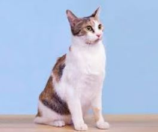
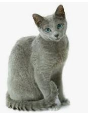
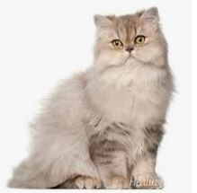

고양이

묘종: 코리안숏헤어
수명: 15~16년
크기: 중형
성격: 개체별로 성격이 달라서 사람손을 아주 오래 탔음에도 사람을 경계하는 개체가 있고 사람에게 크게 당했음에도 계속 좋다고 매달리는 개체가 있다.
특징: 털이 일반적으로 짧으며 얼굴형은 평범한 v자형이고 기본 두상은 주둥이가 약간 길고 하관이 샤프하다.

묘종: 러시안블루
수명: 15~20년
크기: 3.5~4.5kg
성격: 애정이 넘치는 성격이면서 낯가림을 하는 편이다. 친해지는 데에 시간이 걸리지만 한번 마음을 열면 변치 않는 신뢰를 보여준다.
특징: 짙은 초록색 눈은 둥그스름하며 눈 색깔이 두번 바뀐다. 털은 이름과 같이 블루 한가지 색만 나타나며 줄무늬나 얼룩무늬없이 균등한 단색을 이룬다.

묘종: 페르시안
수명: 10~17년
크기: 4~5kg
성격: 얌전하고 의젓하며 느긋한 성격에 빗질을 좋아하고 얌전한 성격에 주인을 매우 잘 따르는 고양이이다.
특징: 귀에 난 장식모에서 목과 가슴에 풍성한 갈기를 거쳐 꼬리털에 이르기까지 전신이 긴 털로 덮여있다. 털이 길고 잘 뭉치기 때문에 빗질을 잘 해주어야한다.
묘종: 샴
수명: 9~13년
크기: 3.5~4.5kg
성격: 소문난 수다쟁이로 주인 어깨 위에 올라타거나 졸졸 따라다니면서 애정표현이 적극적이고 사랑받기를 좋아한다.
특징: 털이 매우 짧고 바탕색은 흰색에서 옅은 황갈색 등 밝은 계열이다. 털이 짧아 빗질을 하는데 시간을 들이지 않아도 된다.

묘종: 스코티쉬폴드
수명: 12~14년
크기: 2.5~12kg
성격: 부드럽고 조용하며 상냥한 성격이다. 외부의 자극에 크게 동요하지 않으며 대담한 면이 있어 낯선 곳에서 겁먹지 않고 금세 적응한다.
특징: 자연적인 우성 유전자 돌연변이로 최초의 스코티시폴드이다. 귀가 접혀 있는 독특한 외모이며 얼굴,목,몸통,다리가 모두 짧고 통통하다. 털은 짧고 부드러운 편이다.